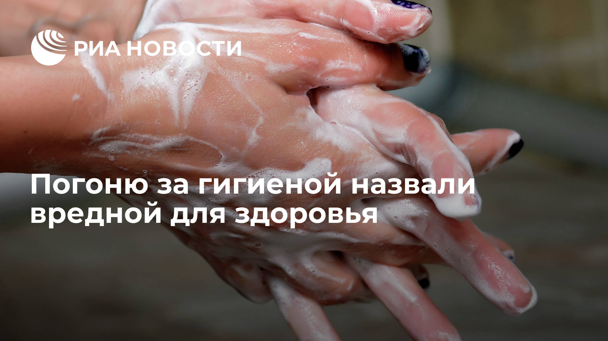
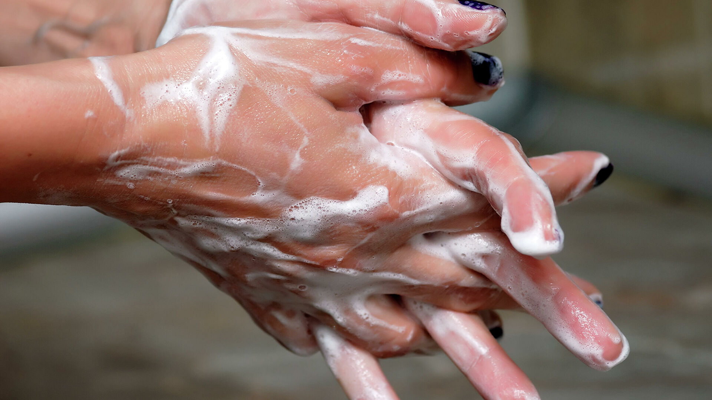
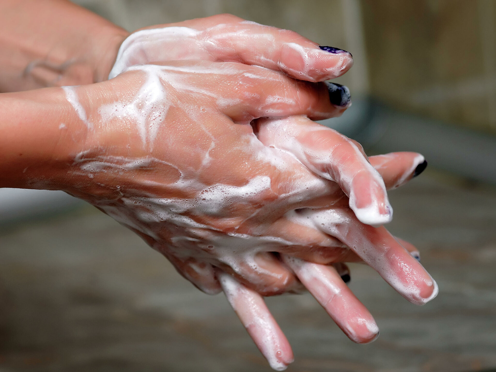
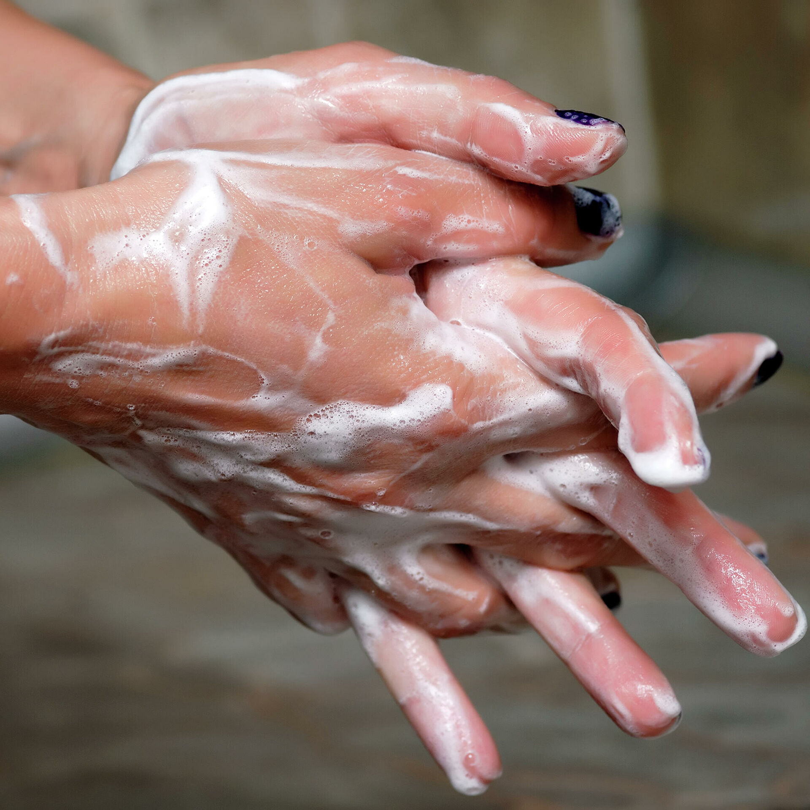

Погоню за гигиеной назвали вредной для здоровья

МОСКВА, 11 мар — РИА Новости.Мытье рук, главный инструмент в борьбе с распространением вирусов, также может нанести вред здоровью.В каких случаях погоня за гигиеной может дать обратный эффект, рассказал врач аллерголог-иммунолог и ведущий медицинской программы на телеканале 'Пятница' Алексей Бессмертный в интервью радио Sputnik.
Вирусы и болезни лучше всего расцветают на людях, которые пренебрегают личной гигиеной.Именно по этой причине любой врач посоветует чаще принимать душ и мыть руки перед едой.Конечно, это не даст стопроцентную защиту от болезней, но повысит шанс избежать многих неприятных заболеваний.Единственная проблема: врачи забывают предупредить своих пациентов о том, что не стоит перебарщивать, рассказал Алексей Бессмертный.
'Гигиена рук важна, особенно в период сезонного заболевания гриппом, но не стоит слишком много уделять этому внимания.Слишком частое (более шести-восьми раз в день) использование моющих средств пересушивает кожу и смывает с нее защитный слой полезных бактерий, которые защищают от инфекций.Плюс к этому частое мытье рук повреждает кожу, поскольку мыло и гели обладают повреждающим действием', — пояснил врач.
Кроме обычного мытья рук также следует ограничить и применение антисептиков, которые россияне слишком много используют во время сезонных обострений вирусных инфекций и ОРВИ.Врач Алексей Бессмертный в интервью радио Sputnik опроверг тезис о том, что антисептики лучше справляются с грязью на руках, чем обычное мытье рук с мылом.
'Как доказала Американская академия педиатрии, просто протирание рук антисептиками не обеззараживает руки.Гораздо более эффективно мытье рук обычной проточной водой.Не стоит злоупотреблять мытьем рук с антисептиками или другими моющими веществами.Достаточно регулярно мыть руки проточной водой.Антисептики и влажные салфетки не смывают грязь с рук, а просто размазывают грязь по рукам', — считает врач.
Posted On: 2020-03-11T00:02:00



Content Date: 2020-03-11
Download Date: 2021-05-13
Document ID: L0C04C0M6